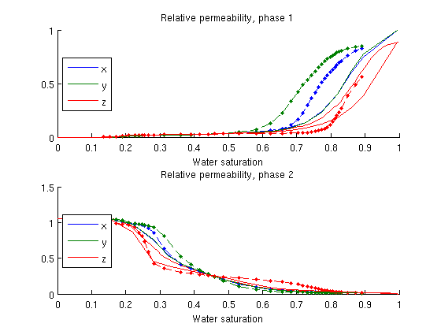

Contents
- Relative permeability upscaling example
- Set up a simple grid with periodic boundaries
- Extract a small subset of SPE10 to upscale.
- Do a single periodic upscale
- Load a two phase fluid for upscaling
- Upscale relative permeability (viscous limit)
- Plot the results for both limits
- Set up a relative permeability upscaling run
- Plot the resulting relative permeability
Relative permeability upscaling example
This example demostrates upscaling of relative permeability on periodic grids. The example upscales a single block sampled from SPE10 using first permeability and then finds relative permeability based on viscous limit and various saturation values.
require spe10
Set up a simple grid with periodic boundaries
Right -> Left Front -> Back Bottom -> Top
G = cartGrid([5 5 2]);
G = computeGeometry(G);
bcr{1}=pside([],G,'RIGHT',0);
bcr{2}=pside([],G,'FRONT',0);
bcr{3}=pside([],G,'BOTTOM',0);
bcl{1}=pside([],G,'LEFT',0);
bcl{2}=pside([],G,'BACK',0);
bcl{3}=pside([],G,'TOP',0);
dp = {0, 0, 0};
% Make periodic grid. We retain the regular grid for plotting, as plotGrid
% uses the boundary faces to plot grids: A fully periodic grid has, per
% definition, no boundary faces.
[Gp, bcp]=makePeriodicGridMulti3d(G, bcl, bcr, dp);
Extract a small subset of SPE10 to upscale.
x = 51; y = 11; z = 1; rock = SPE10_rock(x:(x-1+G.cartDims(1)),... y:(y-1+G.cartDims(2)),... z:(z-1+G.cartDims(3))); clf plotCellData(G, log10(rock.perm(:,1))); title('Fine scale permeability')
Do a single periodic upscale
We upscale the permeability using two point flux approximation for the pressure solver
psolver = @(state, Grid, Fluid, BCP, Rock)... incompTPFA(state, Grid, computeTransGp(G, Grid, Rock),... Fluid, 'bcp', BCP); % L is the size of the domain L = max(G.faces.centroids) - min(G.faces.centroids); % To find permeability we use a unitary fluid so that the mobility/relperm % is equal to the saturation which is equal to one, removing any fluid % specific effects. fluid_pure = initSingleFluid('mu',1,'rho',1); warning('off', 'mrst:periodic_bc') perm2 = upscalePermeabilityPeriodic(Gp, bcp, 1, psolver, fluid_pure, rock, L); warning('on', 'mrst:periodic_bc')
Load a two phase fluid for upscaling
The data are synthetic and should not be used for anything but testing. rocklist contains a list of included property files in a simple format tabulated on water saturation.
current_dir = fileparts(mfilename('fullpath')); fn = fullfile(current_dir, 'rocklist.txt'); T = readTabulatedJFluidFile(fn); % Print the tabulated values from the first and only file fprintf(' Sw |Krw |Kro |J-func\n') fprintf('--------------------------------------------------\n') fprintf('%+1.4e |%+1.4e |%+1.4e |%+1.4e\n', T{1}) fluid = initSWOFFluidJfunc('mu' , [ 10, 100] .* centi*poise , ... 'rho', [1000, 600] .* kilogram/meter^3, ... 'table', T, ... 'satnum', 1, 'jfunc', true, 'rock', rock, ... 'surf_tens', 10*dyne/(centi*meter));
Sw |Krw |Kro |J-func -------------------------------------------------- +1.6380e-01 |+2.0870e-01 |+2.4530e-01 |+2.7820e-01 +3.0570e-01 |+3.4470e-01 |+4.4600e-01 |+4.8450e-01 +5.1050e-01 |+5.5230e-01 |+5.9430e-01 |+6.2280e-01 +6.5200e-01 |+7.2460e-01 |+7.6780e-01 |+8.2710e-01 +8.5990e-01 |+8.9540e-01 |+9.2560e-01 |+9.5610e-01 +9.9720e-01 |+0.0000e+00 |+1.7000e-02 |+1.7500e-02 +1.8300e-02 |+1.9000e-02 |+2.0400e-02 |+2.8300e-02 +3.3900e-02 |+3.6000e-02 |+4.1100e-02 |+4.5600e-02 +5.2200e-02 |+5.9400e-02 |+1.0710e-01 |+1.6320e-01 +3.2400e-01 |+4.7220e-01 |+6.3920e-01 |+7.6180e-01 +8.5000e-01 |+8.8560e-01 |+1.0510e+00 |+9.6900e-01 +8.1380e-01 |+6.6210e-01 |+5.3770e-01 |+4.2750e-01 +2.6110e-01 |+2.0970e-01 |+1.8090e-01 |+1.2850e-01 +9.1200e-02 |+7.1900e-02 |+5.7800e-02 |+3.3800e-02 +2.6600e-02 |+2.1200e-02 |+1.9000e-02 |+1.7400e-02 +1.7100e-02 |+1.7000e-02 |+0.0000e+00 |+2.3538e+00 +2.2030e-01 |+1.1690e-01 |+8.8500e-02 |+7.6600e-02 +6.4200e-02 |+4.2000e-03 |-3.0800e-02 |-3.6800e-02 -5.0000e-02 |-6.0900e-02 |-6.7800e-02 |-7.5700e-02 -9.5600e-02 |-1.0690e-01 |-1.2990e-01 |-1.6020e-01 -2.4550e-01 |-3.2290e-01 |-4.6560e-01 |-1.4570e+00 Using rock.perm(:,1) for j-scaling
Upscale relative permeability (viscous limit)
We assume zero capillary forces and upscale using the viscous and capillary limit.
[saturations_visc, kr_visc] = upscaleRelpermLimit(G, rock, fluid, 'type', 'fixed', 'limit', 'viscous'); [saturations_cap, kr_cap] = upscaleRelpermLimit(G, rock, fluid, 'type', 'fixed', 'limit', 'capillary');
Plot the results for both limits
The viscous limit is equal in all directions, while the capillary is not.
clf;
ph = {'water', 'oil'};
for i = 1:2
subplot(2,1,i)
hold on
plot(saturations_visc, kr_visc{i});
plot(saturations_cap, kr_cap{i}, '--.');
title(['Relative permeability (Viscous/capillary limit), ' ph{i} ' phase']);
xlabel('Saturation')
legend({'x (viscous)', 'y (viscous)', 'z (viscous)'...
'x (capillary)', 'y (capillary)', 'z (capillary)'}, 'location', 'West')
end
Set up a relative permeability upscaling run
Saturations from 0:1 with resolution of ~20 data points.
saturations = 0:0.05:1; % Pressure drop over periodic boundary used to induce flow. dp_scale=1e-3; % Ignore warnings from the implicit sovler as the solution is driven to % steady state. It is natural that some steps fail during this process. warning('off', 'implicitTransport:failure') [sat_vec, kr, perm, krK] = upscaleRelperm(G, rock, fluid, dp_scale, saturations, 'periodic', false); warning('on', 'implicitTransport:failure')
implicitTransport: FAILED due to timestep 0.296242 < 1.18497. implicitTransport: FAILED due to timestep 18.9595 < 37.919. implicitTransport: FAILED due to timestep 9.47975 < 18.9595.
Plot the resulting relative permeability
This is tabulated by water saturation in both cases As the default option is to use a pressure drop in x-direction, the x-values are significantly different from the y/z values which are similar, but not equal.
for i = 1:2 subplot(2,1,i) plot(sat_vec, kr{i}); title(['Relative permeability, phase ' num2str(i)]); xlabel('Water saturation') legend({'x', 'y', 'z'}, 'location', 'West') end